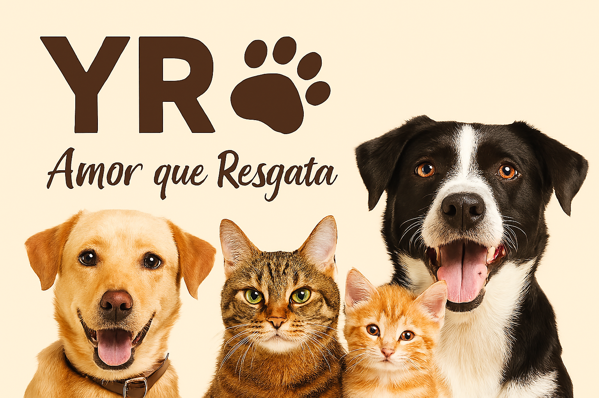

Quem Somos
A YR nasceu do desejo de transformar vidas — humanas e animais. Somos uma organização sem fins lucrativos dedicada ao resgate, cuidado e adoção responsável de animais abandonados.
Contato
Email: contato@amorqueresgata.org
Telefone: (62) 99999-9999
Endereço: Rua Caramelo, Nº 38, Goiânia/GO
Projetos em Destaque
Projeto Resgate e Reabilitação
- Total de animais resgatados: 325
- Taxa de reabilitação bem-sucedida: 92%
- Animais adotados: 210
- Eventos de adoção realizados: 12
- Feedback positivo dos adotantes: 98%
Projeto Educação e Conscientização
- Pessoas alcançadas por campanhas: 4.500
- Escolas visitadas: 35
- Oficinas e palestras realizadas: 50
- Eventos comunitários: 20
- Aumento da conscientização: 87%